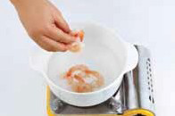

재료
양상추 70g (2장)메추리알 30g(3개)
블루베리 15g(1큰술)
식초 약간
소금 약간
영양성분
칼로리
200kal
탄수화물
40g
지방
4g
단백질
1g
나트륨
1000mg
저감 조리법 TIP
딸기는 칼륨이 풍부하여 나트륨 배출에 뛰어나지만 칼슘이 부족한 과일이에요 그렇기 때문에 칼슘이 풍부한 요거트나 기타 유제품과 함께 섭취하면 좋아요
태그
#딸기
조리 순서
-

1
찬물이 담긴 냄비에 식초,소금을 넣고 메추리알을 삶는다. 물이
끓어오르면 5분 정도 더 삶아 찬물에 헹군 후 껍질을 벗기고 반으로
자른다.
-
2
찬물이 담긴 냄비에 식초,소금을 넣고 메추리알을 삶는다. 물이
끓어오르면 5분 정도 더 삶아 찬물에 헹군 후 껍질을 벗기고 반으로
자른다.
-
3
찬물이 담긴 냄비에 식초,소금을 넣고 메추리알을 삶는다. 물이
끓어오르면 5분 정도 더 삶아 찬물에 헹군 후 껍질을 벗기고 반으로
자른다.
-
4
찬물이 담긴 냄비에 식초,소금을 넣고 메추리알을 삶는다.
물이
끓어오르면 5분 정도 더 삶아 찬물에 헹군 후 껍질을 벗기고 반으로
자른다.
1
찬물이 담긴 냄비에 식초,소금을 넣고 메추리알을 삶는다. 물이 끓어오르면 5분 정도 더 삶아 찬물에 헹군 후 껍질을 벗기고 반으로 자른다.
2
찬물이 담긴 냄비에 식초,소금을 넣고 메추리알을 삶는다. 물이 끓어오르면 5분 정도 더 삶아 찬물에 헹군 후 껍질을 벗기고 반으로 자른다.
3
찬물이 담긴 냄비에 식초,소금을 넣고 메추리알을 삶는다. 물이 끓어오르면 5분 정도 더 삶아 찬물에 헹군 후 껍질을 벗기고 반으로 자른다.
4
찬물이 담긴 냄비에 식초,소금을 넣고 메추리알을 삶는다. 물이 끓어오르면 5분 정도 더 삶아 찬물에 헹군 후 껍질을 벗기고 반으로 자른다.
목록으로